화약류관리기사 (2021-03-07 기출문제)
1과목: 일반화약학
1. 화합화약류에 속하는 것은?
- 질산암모늄 폭약
- 초안유제 폭약
- 흑색화약
- 니트로글리세린
(정답률: 78%)

2. 노이만(Neumann) 효과를 이용하여 금속판에 구멍을 뚫을 경우에 대한 설명으로 옳지 않은 것은?
- 천공의 깊이는 라이너의 밀도와 관계가 있다.
- 라이너의 내각은 5°미만이 적당하다.
- 라이너의 형상은 주로 원추형이나 반구형이다.
- 폭약은 고폭속인 것을 사용한다.
(정답률: 61%)
3. 아지화납 뇌관의 관체에 사용하는 금속은?
- 알루미늄
- 주석
- 구리
- 납
(정답률: 67%)
4. 추진약의 연소효과의 측정 항목으로 가장 거리가 먼 것은?
- 연소압력
- 연소표면적
- 연소온도
- 연소속도
(정답률: 59%)
5. 도폭선의 심약으로 사용되는 물질로 거리가 먼 것은?
- 테틀릴
- TNT
- 헥소겐
- PETN
(정답률: 40%)
6. 다음 중 폭속이 가장 큰 폭약은?
- 테트릴
- 헥소겐
- 피크린산
- 트리니트로톨루엔
(정답률: 53%)
7. 일반적으로 자연분해의 경향이 적어서 장기보존을 할 수 있는 물질로만 나열된 것은?
- 무연화약, 다이너마이트
- 니트로글리세린, 무연화약
- 니트로셀룰로오스, 니트로글리콜
- 피크린산, TNT
(정답률: 53%)
8. DDNP 합성의 주원료는?
- sodium azide
- 테트라센
- 트리시네이트
- 피크린산
(정답률: 50%)
9. 흑색화약의 성질에 대한 설명으로 옳은 것은?
- 화염과 마찰ㆍ충격에 둔감하다.
- 습기를 피하면 장기간 저장이 가능하다.
- 주성분은 황산암모늄이다.
- 폭발열은 약 7000kcal/kg 이다.
(정답률: 57%)
10. 도트리쉬법에 의해 함수폭약의 폭속을 측정하였을 때의 폭속(m/s)은? (단, 표준 도폭선의 폭속 5600m/s, 도폭선의 중심과 폭발 흔적간의 거리는 8cm이고, 폭약 2점간의 거리는 10cm이다.)
- 4200
- 4000
- 3700
- 3500
(정답률: 50%)
11. 콤포지션-C 폭약에 대한 설명으로 옳은 것은?
- TNT, RDX, WAX를 혼합한 폭약
- TNT, RDX를 혼합한 폭약
- RDX에 가소제를 배합한 폭약
- RDX에 WAX를 첨가한 폭약
(정답률: 56%)
12. 니트로글리세린과 니트로셀룰로오스의 콜로이드화가 진행되면 내부의 기포가 없어져서 다이너마이트가 둔감하게 되고 폭발이 어렵게 되는 현상은?
- 고화현상
- 노화현상
- 사압현상
- 흡습현상
(정답률: 58%)
13. 약경이 32mm의 다이너마이트를 순폭시험한 결과 순폭도는 12였고, 얼마 후에 다시 시험을 하였더니 최대 순폭 거리가 32cm였다. 이 때 순폭도는 어떻게 되는가?
- 2증가
- 2감소
- 3증가
- 3감소
(정답률: 60%)
14. 질산암모늄 유제폭약의 표준 배합비율은?
- 질산암모늄 : 경유 = 70 : 30
- 질산암모늄 : 경유 = 82 : 18
- 질산암모늄 : 경유 = 86 : 14
- 질산암모늄 : 경유 = 94 : 6
(정답률: 66%)
15. 디니트로나프탈렌(DNN)의 분자식은?
- C10H6(NO2)2
- C2H4(ONO2)2
- C6H2(NO2)3CH3
- C6H3(NO2)2CH3
(정답률: 48%)
16. 다음 중 수중 발파에 가장 적합한 폭약은?
- 흑색화약
- 초안폭약
- 초유폭약
- 슬러리폭약
(정답률: 68%)
17. 유리산 시험에서 리트머스 종이를 사용하는 이유는?
- 분해가스에 의한 시험지의 변색 측정
- 시료의 감량과 온도증가 측정
- 적색 연기의 생성으로 인한 탈수량의 측정
- 발생가스의 용적 및 압력 증가량의 측정
(정답률: 61%)
18. 폴민산수은(뇌홍)에 대한 설명이 아닌 것은?
- 화학식은 Hg(ONC)2이다.
- 비중은 α형의 것은 4.71, β형인 것이 4.93이다.
- KCLO3를 첨가하여 폭분으로 사용한다.
- 안전을 위해 물 속에 저장할 수 있다.
(정답률: 59%)
19. 다음 반응식과 같이 폭발하는 폭약은?
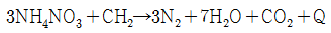
- ANFO
- RDX
- 질산구아니딘
- 피크린산
(정답률: 55%)
20. TNT의 폭발분해 반응식이 다음과 같을 때 산소평형(OB)값은?
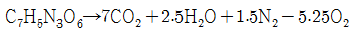
- -0.144
- +0.104
- -0.740
- +0.144
(정답률: 53%)
2과목: 발파공학
21. 벤치(계단)커트를 실시하는 채석장 발파에 있어 벤치높이 4m, 최소저항선 3m, 천공간격 3m인 경우 공당 장약량은? (단, 발파계수는 0.2이다)
- 3.2kg
- 5.4kg
- 7.2kg
- 8.4kg
(정답률: 31%)
22. 폭발 후 응력파가 전파되어 자유면에 도달하면 인장파로 반사하게 되는데, 이 때 암석이 입사할 때의 압력파보다 반사할 때의 인장파에 의해 더 많이 파괴되는 현상을 무엇이라 하는가?
- 홉킨슨효과(Hopkinson Effect)
- 스팔링효과(Spalling Effect)
- 먼로효과(Munroe Effect)
- 측벽효과(Channel Effect)
(정답률: 37%)
23. 발파해체공법 중 단축붕괴공법(Telescoping)에 대한 설명으로 옳은 것은?
- 붕락 시 구조물을 외축에서 내측으로 끌어당기도록 유도하는 공법이다.
- 일반적으로 2~3열의 기둥을 가진 건물을 한쪽방향으로 붕괴시키는 공법이다.
- 구조물이 위치한 제자리에 그대로 붕락되도록 하는 공법이다.
- 복합형상으로 이뤄진 건물을 순간적으로 붕괴시키는 공법이다.
(정답률: 41%)
24. 비전기 뇌관 발파에서 사용 가능한 발파회로 결선법은?
- 직렬 결선법만 가능하다.
- 병렬 결선법만 가능하다.
- 직병렬 결선법만 가능하다.
- 직렬, 병렬, 직병렬 결선법 모두 가능하다.
(정답률: 41%)
25. 발파로 인해 발생한 전단파가 토양층을 통과한다. 공명주파수가 가장 크게 측정되는 토양층 두께는? (단, 통과하는 전단파의 속도는 동일하다.)
- 10m
- 20m
- 30m
- 40m
(정답률: 37%)
26. 비산의 방지대책으로 틀린 것은?
- 발파공이 정확한 경사로 천공도었는지 확인한다.
- 발파공벽과 마찰을 크게 하기 위해 천공분진을 이용하여 전색한다.
- 이완된 암반과 공극을 잘 조사하고 이완된 부분은 무장약공으로 전색만 한다.
- 가스가 발파공 상부로부터 새어나올 때 쉽게 튀어나가지 않도록 느슨한 암괴를 치우고 작업장을 깨끗이 한다.
(정답률: 35%)
27. Trim blasting을 실시하려고 한다. 장약공의 지름이 50mm일 때, 발파설계 내용으로 틀린 것은?
- 장약밀도는 168.75g/m로 설계하였다.
- 천공간격을 80cm로 설계하였다.
- 저항선을 104cm로 설계하였다.
- 공저의 집중장약은 주상장약밀도의 2배 정도로 설계하였다.
(정답률: 36%)
28. 직교하는 2자유면의 암석발파에서 최소 저항선은 120cm이며 공간격도 최소저항선과 동이하다. 이때 천공깊이를 150cm 수직 천공하여 발파할 경우 공당 채석량은? (단, 암석 비중은 1.9이다.)
- 3.4 t
- 4.1 t
- 5.1 t
- 6.2 t
(정답률: 30%)
29. Lilly의 발파지수(Bl, Blastability Index)를 나타내는 식이 아래와 같을 때 이 식에서 JPO가 의미하는 것은?
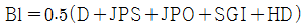
- 절리의 수
- 절리의 간격
- 절리의 방향
- 절리의 거칠기
(정답률: 40%)
30. 2자유면 이상의 발파에 있어서 최소저항선이 130cm이고, 장약의 길이는 공경의 10배일 때 천공심도는? (단, 구멍의 반지름은 15mm이다.)
- 1.25m
- 1.35m
- 1.40m
- 1.45m
(정답률: 28%)
31. 제안자에 따른 수두지수 함수의 연결로 틀린 것은?
- Hauser :
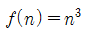
- Brallion :
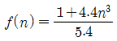
- Marescott :
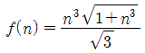
- Dambrun :
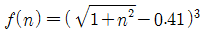
(정답률: 37%)
32. 갱도굴착 단면적이 20m2이고, 천공장이 1.7m, 암석항력계수가 1인 암석갱도를 굴질하려고 한다. 1발파당 굴진장을 천공장의 90%로 보았을 때 발파당 폭약량은 약 얼마인가? (단, 폭약 위력계수 e=1, 전색계수 d=1이다.)
- 1kg
- 27kg
- 32kg
- 37kg
(정답률: 14%)
33. 아래와 같은 조건에서 발파를 실시할 때 적용되는 생활진동 규제기준은?
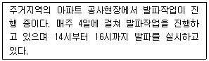
- 60 dB(V) 이하
- 65 dB(V) 이하
- 70 dB(V) 이하
- 75 dB(V) 이하
(정답률: 41%)
34. 발파에 의한 가옥의 피해 손상정도를 판단하는 기준으로 가옥에 미세한 크랙(crack)이 발생하고, 벽토의 붕락이 일어나는 V/C 값으로 가장 적합한 것은? (단, V/C는 Langefors가 제안한 기초지반에서의 탄성파 속도 C(km/s)에 대한 지반진동속도 V(cm/s)의 비이다.)
- 0.6
- 1.0
- 1.4
- 3.3
(정답률: 25%)
35. 수직천공과 비교한 경사천공의 장점으로 틀린 것은?
- 1자유면에서의 문제성 감소
- 낮은 계단발파에서 근거리 비산
- 느슨한 암석의 자유면 보호에 유리
- 자유면 반대방향의 후면 파괴영역이 감소
(정답률: 15%)
36. 계단식 발파에서 작은 파쇄입도를 얻기 위한 방법으로 옳은 것은?
- 1회당 1열씩 순발발파한다.
- 공당 장약량을 감소시킨다.
- 최소저항선을 천공간격보다 크게 한다.
- 동일 암석체적에 대한 천공수를 증가시킨다.
(정답률: 29%)
37. 폭약류의 비교에 대한 설명으로 옳은 것은?
- 슬러리 폭약의 폭속이 에멀젼 폭약의 폭속보다 빠르다.
- 발파 후 가스는 다이너마이트가 에멜젼 폭약보다 양호하다.
- 에멀젼 폭약이 슬러리 폭약보다 저온 기폭성이 우수하다.
- 슬러리 폭약의 내동압과 내정압이 다이너마이트보다 크다.
(정답률: 15%)
38. 암석의 특성에 따른 폭약 선정방법으로 틀린 것은?
- 장공 발파는 비중이 작은 폭약을 사용한다.
- 강도가 큰 암석에는 에너지가 큰 폭약을 사용한다.
- 굳은 암석에는 정적효과가 큰 폭약을 사용한다.
- 심빼기 발파에는 순폭도가 좋은 폭약을 사용한다.
(정답률: 31%)
39. 수중 발파 시 발생되는 충격압을 제어하는 방법 중 폭원에서 떨어진 임의의 장소에서 제어하는 방법으로 틀린 것은?
- 수중지발뇌관을 이용하는 방법
- 에어버블커텐을 이요하는 방법
- 완충재에 의한 방호막을 이용하는 방법
- 드라이아이스커텐의 기포를 이용하는 방법
(정답률: 27%)
40. 디커플링지수(Decoupling Index)의 개념으로 옳은 것은?
- 장약경에 대한 순폭거리의 비
- 장약경에 대한 천공경의 비
- 장약장에 대한 천공장의 비
- 최소 저항선에 대한 누두반경의 비
(정답률: 25%)
3과목: 암석역학
41. 응력을 제거했을 때 변형률이 0이 되기 위해서 무한대의 시간이 필요한 모델은?
- Kelvin 모델
- Maxwell 모델
- Bingham 모델
- St. Venant 모델
(정답률: 35%)
42. Kaiser 효과에 의한 미세균열 거동 현상을 이용하는 초기응력 측정법으로만 나열된 것은?
- 수압파쇄법과 공경변형법
- AE(Acoustic Emission)법과 Flat jack법
- AE(Acoustic Emission)법과 Doorstopper법
- AE(Acoustic Emission)법과 DRA(Deformation Rate Analysis)법
(정답률: 38%)
43. 현지암반의 변형계수를 측정하기 위한 시험법이 아닌 것은?
- 평판재하시험
- 수압파쇄시험
- 압력터널시험
- Goodman잭을 이용한 시추공내 시험
(정답률: 36%)
44. 암석 파괴이론 중에 중간 주응력을 고려한 것은?
- 내부마찰각설
- 최대전단응력설
- 응력원포락선설
- 전단변형률에너지설
(정답률: 30%)
45. 어떤 암석의 P파 속도가 4400m/s, S파 속도가 2000m/s인 경우 동푸아송 비는?
- 0.13
- 0.25
- 0.37
- 0.49
(정답률: 20%)
46. 탄성체가 z방향으로 구속된 평면변형률 상태에서 x,y방향의 응력이 σx, σy이며, 푸아송 비가 v일 때 z방향의 응력 σz는?
- σz=(1-v)(σx+σy)
- σz=(1+v)(σx+σy)
- σz=v(σx+σy)
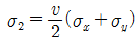
(정답률: 36%)
47. 몬모릴로나이트(Montmorillonte)를 함유하고 있는 이암의 특성이 아닌 것은?
- 물에 침수되면 팽창(swelling)이 크다.
- 건습작용을 반복적으로 받으면 부서진다.
- 풍화가 되어도 암석의 변형이 일어나지 않는다.
- 셰일은 층리가 발달되어 성층면에 따라 잘 쪼개지는 성질인 박리성이 있지만, 이암은 평행구조가 없어 박리성이 없다.
(정답률: 34%)
48. RQD(Rock Quality Designation)에 대한 설명으로 틀린 것은?
- 절리의 방향성을 고려하지 못한다.
- RMR의 분류요소에 속하지 않는다.
- 일반적으로 NX 코어를 사용하여 계산한다.
- 총 시추 길이에 대한 길이 10cm이상 되는 코어 길이의 합의 백분율이다.
(정답률: 35%)
49. 점하증강도 시험에서 축방향시험 시 점하중강도지수(IS)를 구하는 식은? (단, 하중, W는 시험편의 지름, D는 시험편의 두 접촉점 사이의 거리이다.)
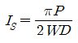
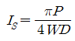
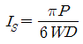
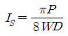
(정답률: 40%)
50. 암반사면에서 평면파괴가 일어나기 위해 만족되어야 하는 기하학적인 조건으로 틀린 것은?
- 파괴면의 경사각은 그 면의 마찰각보다 작아야 한다.
- 파괴면의 경사각은 사면의 경사각보다 작아야 한다.
- 미끄러짐이 일어나는 면은 경사면에 평행하거나 거의 평행한 주향을 가져야 한다.
- 미끄러짐에 저항력을 갖지 않는 이완면이 미끄러짐의 측면 경계부로서 암반 내에 존재해야 한다.
(정답률: 18%)
51. 삼축압축시험에서 봉압이 증가할 때 일어나는 현상은?
- 잔류강도가 감소한다.
- 압축강도가 증가한다.
- 취성파괴가 일어난다.
- 변형률 연화 현상이 심화된다.
(정답률: 37%)
52. 지반을 개개의 강성 블록으로 모델링하고 불연속면에서의 변위가 블록 자체의 변형보다 대단히 큰 경우 효과적으로 적용할 수 있는 수치해석법은?
- 개별요소법
- 유한요소법
- 경계요소법
- 한계평형해석법
(정답률: 41%)
53. 2차원 상태의 미소평면에 σx=2MPa, σy=40MPa, τxy=5MPa의 응력이 작용하고 있을 때 2차원 Mohr 응원력의 반지름은?
- 11.18MPa
- 12.39MPa
- 13.19MPa
- 14.35MPa
(정답률: 23%)
54. Griffith 파괴이론에 의하면 일축압축강도는 인장강도의 몇 배인가?
- 4배
- 8배
- 12배
- 20배
(정답률: 25%)
55. 암석의 인장강도를 구하고자 압열인장 강도시험(Brazilian test)을 실시하여 아래와 같은 결과를 얻었다면 이 암석의 인장강도는?
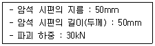
- 7.64MPa
- 8.14MPa
- 8.57MPa
- 9.55MPa
(정답률: 21%)
56. 절리면 전단시험 시 시험편의 전단거동특성에 대한 설명으로 틀린 것은?
- 절리면의 최대마찰각은 보통 잔류마찰각보다 크다.
- 절리면의 거칠기 강도가 클수록 전단강도는 커진다.
- 절리면이 분리되어 있는 경우 점착력은 0에 가깝다.
- 절리면에 작용하는 법선응력이 클수록 전단강도는 작아진다.
(정답률: 19%)
57. 평사투영법(stereographic projection)에 의해 불연속면들의 극정(pole)을 분석한 결과, 극점이 사면방향과 같은 방향으로 두 곳에 집중되었다. 이 지역에서 예상되는 사면파괴의 형태는?
- 평면파괴
- 쐐기파괴
- 원호파괴
- 전도파괴
(정답률: 42%)
58. 건조된 어떤 암석 시료의 겉보기 밀도는 2.6g/cm3이고, 이 시료를 이루는 입자들의 밀도는 3.4g/cm3이다. 이 시료의 공극률은?
- 약 15.4%
- 약 20.5%
- 약 23.5%
- 약 35.4%
(정답률: 30%)
59. 암석에 있어서 크리프 현상에 대한 설명으로 틀린 것은?
- 암석의 시간 의존성 변형의 대표적인 현상이다.
- 암석에 가해지는 응력수준에 따라 크리프 거동은 달리 나타나게 된다.
- 암석에 응력을 가하고 제거하는 반복응력에 의해 변형률이 지속적으로 증가하는 현상이다.
- 크리프 거동을 3단계로 구분할 때 2차 크리프 구간에서 크리프 변형률과 경과시간은 선형적으로 비례한다.
(정답률: 24%)
60. 지하공동의 폭이 20m, ESR이 1인 경우 등가 굴착크기(Equivalent dimension)는?
- 0.5m
- 10m
- 20m
- 40m
(정답률: 35%)
4과목: 화약류 안전관리 관계 법규
61. 허가를 받지 아니하고 제조할 수 있는 화학류의 수량으로 옳은 것은? (단, 학교ㆍ연구소등 공인된 기관에서 물리ㆍ화학상의 실험목적으로 사용하기 위한 것이며, 신호염관ㆍ신호화전 또는 꽃불류의 원료용 화약 및 폭약을 제조하는 경우)
- 화약 1회 600g 이하
- 폭약 1회 400g 이하
- 신호화전 1회 600g 이하
- 신호염관 1회 1000g 이하
(정답률: 41%)
62. 대발파의 기술상의 기준으로 옳지 않은 것은?
- 갱도의 굴진작업을 하는 때에는 그 작업에 필요한 최소량의 화약류만 가지고 들어갈 것
- 발파의 계획과 작업은 1급 또는 2급 화약류관리보안책임자로 하여금 직접하게 할 것
- 약포는 약실에 밀접하게 장전하고 습기가 차지 않도록 할 것
- 갱안의 도폭선과 전선은 간단하게 배선할 것
(정답률: 44%)
63. 화약류를 양도 또는 양수하고자 하는 사람은 누구의 허가를 받아야 하는가? (단, 예외사항 제외)
- 영업지 관할 시ㆍ도경찰청장
- 영업지 관할 경찰서장
- 사용지 관할 시ㆍ도경찰청장
- 사용지 관할 경찰서장
(정답률: 35%)
64. 화약류와 관련한 장부의 비치 등에 대한 설명으로 옳은 것은?
- 화약류 판매업자는 화약류 출납부를 비치하여야 한다.
- 화약류 제조업자는 화약류 제조 명세부 및 원료화약류 수지명세부를 비치하여야 한다.
- 화약류 저장소설치자는 화약류 양도ㆍ양수명세부를 비치하여야 한다.
- 장부는 기입을 완료한 날로부터 3년간 각각 보존해야 한다.
(정답률: 27%)
65. 화약류관리보안책임자의 면허를 받을 수 있는 사람은?
- 20세 미만인 사람
- 색맹 또는 색약인 사람
- 손가락이 1개 절단된 사람
- 말은 할 수 있으나 듣지 못하는 사람
(정답률: 53%)
66. 다음 ( )안에 들어갈 수치를 차례대로 옳게 나타낸 것은?
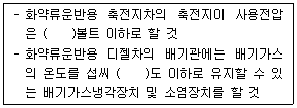
- 50, 80
- 80, 50
- 100, 70
- 70, 100
(정답률: 41%)
67. 1급저장소와 보안물건 간의 보안거리의 기준으로 옳은 것은? (단, 저장된 폭약량은 20톤이며, 철도가 있음)
- 220m 이상
- 170m 이상
- 140m 이상
- 120m 이상
(정답률: 40%)
68. 총포ㆍ도검ㆍ화약류 등의 안전관리에 관한 법령상 다음 ( )안에 알맞은 내용은?
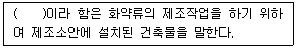
- 위험공실
- 보안물건
- 공실
- 화약류 일시저치장
(정답률: 44%)
69. 화약류관리보안책임자의 선임기준으로 옳지 않은 것은?
- 월중 2톤 이상의 폭약 사용자 – 2급 화약류관리보안책임자 면허취득자
- 연중 40톤 이상 폭약 저장소 – 1급 화약류관리보안책임자 면허취득자
- 월중 50kg 미만의 폭약 사용자 – 1급, 2급 또는 3급 화약류관리보안책임자 면허취득자
- 꽃불류 및 장난감용꽃불류 저장소 – 1급 또는 2급 화약류관리보안책임자 면허취득자
(정답률: 36%)
70. 화약류를 운반하는 사람은 운반과정에 화약류운반신고증명서를 지니고 있어야 한다. 이를 위반할 때 받는 처벌은?
- 2년 이하의 징역 또는 200만원 이하의 벌금
- 500만원 이하의 과태료
- 300만원 이하의 과태료
- 300만원 이하의 벌금
(정답률: 34%)
71. 다음의 화약류 중 제조, 수출ㆍ입에 관하여는 총포ㆍ도검ㆍ화약류 등의 안전관리에 관한 법률의 적용을 받지만 판매, 소지에 관하여는 적용받지 않는 품목은?
- 총용 뇌관
- 신관 및 화관
- 흑색화약
- 장난감용 꽃불류
(정답률: 58%)
72. 폭약과 비슷한 파괴적 폭발에 사용될 수 있는 것으로서 대통령령이 정하는 것에 속하는 것은?
- 과염소산염을 주로 한 폭약
- 폭발의 용도에 사용되는 황산알루미늄 또는 이를 주성분으로 한 폭약
- 질소함량이 11% 이하인 면약
- 무수규산 75% 이상을 함유한 폭약
(정답률: 36%)
73. 화약류 운반 시 운반표지를 하지 않아도 되는 화약류의 수량으로 틀린 것은?
- 100개 이하의 공업용 뇌관
- 5kg이하의 폭약
- 1000개 이하의 미진동파쇄기
- 1000m 이하의 도폭선
(정답률: 35%)
74. 정기안전검사를 받아야 하는 대상 시설에 속하지 않는 것은?
- 꽃불류제조소의 제조시설 중 폐약처리장
- 1급 화약류저장소
- 2급 화약류저장소
- 꽃불류저장소
(정답률: 48%)
75. 화약류의 적재방법의 기술상의 기준으로 옳지 않은 것은?
- 운반중에 마찰 또는 동요되거나 굴러 ᄄᅠᆯ어지지 아니하도록 할 것
- 화약류(초유폭약ㆍ실탄ㆍ공포탄 및 포탄을 제외한다)는 싣고자 하는 차량의 적재정량의 80%에 상당하는 중량(외장의 중량을 포함한다)을 초과하여 싣지 아니할 것
- 화약류를 발화성 또는 인화성 물질과 동일한 차량에 함께 싣는 경우 소화기를 반드시 설치할 것
- 화약류는 방수 및 내화성이 있는 덮개로 덮을 것
(정답률: 55%)
76. 화약류 판매업자가 소지 또는 양수허가를 받지 아니한 사람에게 화약류를 양동했을 경우 행정처분기준은? (단, 2회 위반)
- 1월 효력정지
- 3월 효력정지
- 6월 효력정지
- 면허 취소
(정답률: 40%)
77. 위험공실의 준방폭식 구조의 기준에 대한 설명으로 옳지 않은 것은?
- 출입구는 방폭면 외의 벽에 설치한다.
- 방폭면에는 폭발에 대한 저항성을 높이기 위해 장문을 설치하지 않아야 한다.
- 출입구의 폭은 1.5m이하로 한다.
- 지붕은 방폭방향에 대하여 하향으로 경사지게 한다.
(정답률: 40%)
78. 화약류저장소에 따른 화약류의 최대 저장량으로 적합하지 않은 것은?
- 1급 저장소 – 도폭선 2000km
- 2급 저장소 – 신호뇌관 1000만개
- 간이저장소 – 총용뇌관 30000개
- 수중저장소 – 화약 400톤
(정답률: 24%)
79. 화약류를 양도 또는 양수하고자 할 때 허가를 받지 않아도 되는 경우로 옳지 않은 것은?
- 제조업자가 제조할 목적으로 화약류를 양수하거나 제조한 화약류를 양도하는 경우
- 화야류의 수출입 허가를 받은 사람이 그 수출입과 관련하여 화약류를 양도ㆍ양수하는 경우
- 판매업자가 판매할 목적으로 화약류를 양도ㆍ양수하는 경우
- 화약류관리보안책임자가 현장 발파용으로 화약류를 양수하는 경우
(정답률: 30%)
80. 화약류의 안정도시험에 사용하는 시험기 등에 대한 설명으로 틀린 것은?
- 내열시험기는 내열시험용시험관 및 탕전기로 할 것
- 가열시험기는 칭량병 및 칭량시험기로 할 것
- 청색리트머스시험지는 가로 20밀리미터 세로 30밀리미터의 것으로 할 것
- 청색리트머스시험지 아이오딘화칼륨 녹말종이 정체활석분 및 표준색지는 행정안전부장관이 지정하는 연구소등에서 시행하는 검정시험에 합격한 것으로 할 것
(정답률: 46%)
5과목: 굴착공학
81. 그림과 같은 단순사면에서의 심도계수는?
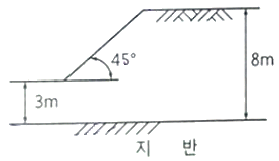
- 0.4
- 0.6
- 1.6
- 2.7
(정답률: 38%)
82. 터널 굴착에 따른 지하수 및 지표수 등 터널 내 용수를 처리하기 위하여 적용하는 지수 공법에 해당하지 않는 것은?
- 주입공법
- 압기공법
- 동결공법
- 웰포인트공법
(정답률: 30%)
83. 발파공법과 비교한 TBM 공법의 일반적인 장점으로 틀린 것은?
- 진동, 소음 등의 환경문제가 적다.
- 시공 중 암질의 변화, 용수량 등에 따라 굴착공법의 변경이 쉽다.
- 암질이 양호한 경우 시공속도가 빠르고 공기 단축효과를 기대할 수 있다.
- 굴착에 따른 암반의 이완을 방지하기 쉬워 작업의 안전 확보가 용이하고 지보공을 경감시킬 수 있다.
(정답률: 42%)
84. 옹벽에서 주동토압에 대한 설명으로 옳은 것은?
- 옹벽이 뒷채움 토사에 대하여 완전 정치상태에 있을 때의 토압을 말한다.
- 옹벽이 뒷채움 토사의 반대방향으로 움직일 때 작용하는 토압을 말한다.
- 옹벽이 뒷채움 토사의 방향으로 움직일 때 작용하는 토압을 말한다.
- 옹벽이 최부하중에 의해서 파괴할 때 작용하는 토압을 말한다.
(정답률: 25%)
85. 터널시공을 위한 지반조사를 실시하였을 때 터널시공에 문제가 되는 지반조건으로 가장 거리가 먼 것은?
- 고결 지반
- 팽창성 지반
- 온천이 있는 지반
- 피압대수층이 있는 지반
(정답률: 43%)
86. 터널계측은 일상적인 시공관리를 위한 일상계측(계측 A)과 정밀 분석을 위한 정밀계측(계측 B)으로 분류한다. 다음 중 일상계측에 해당하지 않는 것은?
- 지중변위 측정
- 천단침하 측정
- 록볼트 인발시험
- 터널 내 관찰조사
(정답률: 39%)
87. 숏크리트의 건ㆍ습식 공법에 대한 설명으로 틀린 것은?
- 습식은 청소, 보수가 쉽다.
- 분진은 건식이 비교적 많다.
- 압송거리는 건식이 우수하다.
- 리바운드율은 습식이 비교적 적다.
(정답률: 46%)
88. 사면안전공법 중 억지공법이 아닌 것은?
- 절토공법
- 식생공법
- 옹벽공법
- 앵커공법
(정답률: 27%)
89. 숏크리트의 작용 효과에 해당하지 않는 것은?
- 내압 효과
- 빔 형성 효과
- 낙석의 방지 효과
- 지반 아치 형성 효과
(정답률: 35%)
90. 두께 4m의 포화 점토층이 지표로부터 8m깊이의 모래층 아래에 있으며, 지하수위는 지표면 아래 6m 깊이에 있다. 점토와 모래의 포화단위중량은 각각 19kN/m3, 20kN/m3이고, 지하수위 위에 있는 모래의 단위중량은 17kN/m3이다. 지표면 아래 12m 지점에서의 유효연직응력은? (단, 물의 단위중량은 9.8kN/m3이다.)
- 59kN/m2
- 110kN/m2
- 159kN/m2
- 218kN/m2
(정답률: 21%)
91. 그림과 같이 암반사면 위에 무게 50kN의 암석 블록이 놓여 있다. 블록의 밑면적이 500cm2, 암반 사면의 경사각 30°, 미끄러짐면의 점착력이 200kN/m2, 마찰각 30°일 때 미끄러짐에 대한 안전율은?
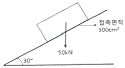
- 1.4
- 1.2
- 1.0
- 0.8
(정답률: 23%)
92. 화성암을 분류할 때 염기성암에 해당하는 것은?
- 반려암
- 유문암
- 안산암
- 섬록암
(정답률: 34%)
93. 록볼트의 지보효과가 아닌 것은?
- 빔 형성 효과
- 지반 개량 효과
- 풍화 방지 효과
- 원지반 아치 형성 효과
(정답률: 29%)
94. Terzaghi의 암반 하중분류법에서 암반하중이 가장 크게 작용하는 암반상태로 옳은 것은?
- 팽창성 암반
- 압착성 암반
- 파쇄가 심한 암반
- 심한 블록상 및 층상 암반
(정답률: 35%)
95. 에너지를 지하공동 내에 저장하는 경우, 활용이 기대되는 지하공간 특성으로 가장 거리가 먼 것은?
- 단열성
- 격리성
- 차광성
- 변온성
(정답률: 44%)
96. 평탄한 탄성지반의 지표면에 집중하중 200kN이 작용할 경우, 여기서 지표면상에 가로 3m, 세로 4m 떨어진 A지점이 있다. A지점의 지표면 아래 10m 지점에서 이 집중하중에 의해서 발생되는 연직응력의 증가량은?
- 0.16kN/m2
- 0.27kN/m2
- 0.35kN/m2
- 0.55kN/m2
(정답률: 8%)
97. 터널 굴착 공법 중 메세르(messer)공법에 대한 설명으로 옳은 것은?
- 지반침하의 발생 가능성이 높다.
- 곡선 터널을 시공하기에 적합한 공법이다.
- 점토, 실트 또는 사질토 등의 토사층 터널 굴착에는 적용하기 어렵다.
- 강널판의 배치를 검토하면 굴착단면을 자유로이 선정할 수 있다.
(정답률: 25%)
98. 막장면에 지지코어를 남기고 굴착하는 공법으로 막장면의 안정성이 문제가 되는 지반에 적용하는 굴착공법은?
- 링컷공법
- 다단벤치컷공법
- 측벽선진도갱공법
- 전단면굴착공법
(정답률: 38%)
99. 사면을 대상으로 하는 암반 분류법인 SMR은 RMR을 기초로 하고, 기타 요소를 고려하여 보정하는 암반분류방법이다. RMR을 결정한 후 SMR을 위해 적용되는 기타 요소가 아닌 것은?
- 사면의 굴착방법
- 절리면의 경사각
- 절리면에 작용하는 지하수
- 사면의 주향과 절리면의 주향과의 관계
(정답률: 29%)
100. D10=0.082mm, D30=0.29mm, D60=0.51mm인흙의 균등계수(Cu)와 곡률계수(Cc)는? (단, D10, D30, D60은 입격가적곡선에서 통과중량백분율 10%, 30%, 60%에 해당되는 입경이다.)
- Cu=6.35, Cc=2.71
- Cu=6.22, Cc=2.71
- Cu=6.35, Cc=2.01
- Cu=6.22, Cc=2.01
(정답률: 19%)